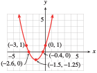

Section 6.3 Graphing Parabolas
Subsection Introduction
The graph of a quadratic function \(f(x) = ax^2 + bx + c\) is called a parabola. Some parabolas are shown below.

All these parabolas share certain features.
The graph has either a highest point (if the parabola opens downward, as in figure (a) or a lowest point (if the parabola opens upward, as in figure (b). This high or low point is called the vertex of the graph.
The parabola is symmetric about a vertical line, called the axis of symmetry, that runs through the vertex.
The \(y\)-intercept is the point where the parabola intersects the \(y\)-axis. The graph of a quadratic function always has exactly one \(y\)-intercept.
However, the graph may cross the \(x\)-axis at one point, at two points, or not at all. Points where the parabola intersects the \(x\)-axis are called the \(x\)-intercepts. If there are two \(x\)-intercepts, they are equidistant from the axis of symmetry.
The values of the constants \(a\text{,}\) \(b\text{,}\) and \(c\) determine the location and orientation of the parabola. We will begin by considering each of these constants separately.
Checkpoint 6.50. QuickCheck 1.
Subsection The Graph of \(y = ax^2\)
In Chapter 2, we saw that the graph of \(y = a f(x)\) is a transformation of the graph of \(y = f(x)\text{.}\) The scale factor, \(a\text{,}\) stretches or compresses the graph vertically, and if \(a\) is negative, the graph is reflected about the \(x\)-axis.
Example 6.51.
Sketch a graph of each quadratic function by hand.
\(\displaystyle y = 2x^2\)
\(\displaystyle y = -\dfrac{1}{2}x^2\)
Both functions are of the form \(y = ax^2\text{.}\) The graph of \(y = 2x^2\) opens upward because \(a = 2 \gt 0\text{,}\) and the graph of \(y = -\dfrac{1}{2}x^2\) opens downward because \(a = -\dfrac{1}{2}\lt 0\text{.}\)
To make a reasonable sketch by hand, it is enough to plot a few guidepoints; the points with \(x\)-coordinates \(1\) and \(-1\) are easy to compute.

| \(x\) | \(y=2x^2\) | \(y=-\frac{1}{2}x^2\) |
| \(-1\) | \(2\) | \(-\dfrac{1}{2}\) |
| \(0\) | \(0\) | \(0\) |
| \(1\) | \(2\) | \(-\dfrac{1}{2}\) |
We sketch parabolas through each set of guidepoints, as shown at left.
Checkpoint 6.52. QuickCheck 2.
Checkpoint 6.53. Practice 1.

Match each parabola in the figure above with its equation. The basic parabola is shown in black.
\(y = -\dfrac{3}{4}x^2\)
I
II
III
IV
\(y = \dfrac{1}{4}x^2\)
I
II
III
IV
\(y = \dfrac{5}{2}x^2\)
I
II
III
IV
\(y = -\dfrac{5}{4}x^2\)
I
II
III
IV
Subsection The Graph of \(y= x^2 + c\)
Next, we consider the effect of the constant term, \(c\text{,}\) on the graph. Adding a constant \(c\) to the formula for \(y = f(x)\) causes a vertical translation of the graph.
Example 6.54.
Sketch graphs for the following quadratic functions.
\(\displaystyle y = x^2 - 2\)
\(\displaystyle y = -x^2 + 4\)
-
The graph of \(y = x^2 - 2\) is shifted downward by two units, compared to the basic parabola. The vertex is the point \((0, -2)\) and the \(x\)-intercepts are the solutions of the equation
\begin{equation*} 0 = x^2 - 2 \end{equation*}or \(\sqrt{2}\) and \(-\sqrt{2}\text{.}\) The graph is shown below.

-
The graph of \(y = -x^2 + 4\) opens downward and is shifted \(4\) units up, compared to the basic parabola. Its vertex is the point \((0, 4)\text{.}\) Its \(x\)-intercepts are the solutions of the equation
\begin{equation*} 0 = -x^2 + 4 \end{equation*}or \(2\) and \(-2\text{.}\) You can verify both graphs with your graphing calculator.
Checkpoint 6.55. QuickCheck 3.
Checkpoint 6.56. Practice 2.

-
Find an equation for the parabola shown above.
\(y=\)
-
Give the \(x\)- and \(y\)-intercepts of the graph.
\(x\)-intercepts: Note: Use a comma to separate different points.
\(y\)-intercept:
Checkpoint 6.57. Pause and Reflect.
Describe what the parameters \(a\) and \(c\) tell you about the graph of \(y=ax^2+c\text{.}\)
Subsection The Graph of \(y = ax^2 + bx\)
How does the linear term, \(bx\text{,}\) affect the graph? Let us begin by considering an example. Graph the function
on your calculator. The graph is shown at right.

Note that \(a = 2\) and that \(2 \gt 0\text{,}\) so the parabola opens upward. We can find the \(x\)-intercepts of the graph by setting \(y\) equal to zero:
The solutions of this equation are \(0\) and \(-4\text{,}\) so the \(x\)-intercepts are the points \((0, 0)\) and \((-4, 0)\text{.}\)
Recall that the parabola is symmetric about a vertical line through its vertex. (We will prove that this is true in the Homework problems.) The two \(x\)-intercepts are equidistant from this line of symmetry, so the \(x\)-coordinate of the vertex lies exactly halfway between the \(x\)-intercepts. We can average their values to find
To find the \(y\)-coordinate of the vertex, substitute \(x = -2\) into the equation for the parabola:
Thus, the vertex is the point \((-2,-8)\text{.}\)
Checkpoint 6.58. Practice 3.
-
Find the \(x\)-intercepts and the vertex of the parabola \(y = 6x - x^2\text{.}\)
\(x\)-intercepts: Note: Use a comma to separate different points.
Vertex:
-
Verify your answers by graphing the function in the window
\begin{equation*} \begin{aligned}[t] \text{Xmin} \amp = -9.4 \amp\amp \text{Xmax} = 9.4\\ \text{Ymin} \amp = -10 \amp\amp \text{Ymax} = 10 \end{aligned} \end{equation*}
Subsection Finding the Vertex
We can use the same method to find a formula for the vertex of any parabola of the form
We proceed as we did in the previous example.
First, find the \(x\)-intercepts of the graph by setting \(y\) equal to zero and solving for \(x\text{.}\)
Thus,
The \(x\)-intercepts are the points \((0, 0)\) and \((\dfrac{-b}{a}, 0)\text{.}\)

Next, we find the \(x\)-coordinate of the vertex by taking the average of the two \(x\)-intercepts found above:
This gives us a formula for the \(x\)-coordinate of the vertex.
Vertex of a Parabola.
For the graph of \(y = ax^2 + bx\text{,}\) the \(x\)-coordinate of the vertex is
Also, the axis of symmetry is the vertical line \(x = \dfrac{-b}{2a}\)as shown in the figure above. Finally, we find the \(y\)-coordinate of the vertex by substituting its \(x\)-coordinate into the equation for the parabola.
Example 6.59.
Find the vertex of the graph of \(f(x) = -1.8x^2 - 16.2x\text{.}\)
Find the \(x\)-intercepts of the graph.
The \(x\)-coordinate of the vertex is
\begin{equation*} x_v=\frac{-b}{2a}=\frac{-(-16.2)}{2(-1.8)}=-4.5 \end{equation*}To find the \(y\)-coordinate of the vertex, evaluate \(f(x)\) at \(x = \alert{-4.5}\text{.}\)\begin{equation*} y_v=-1.8(\alert{-4.5})^2 - 16.2(\alert{-4.5}) = 36.45 \end{equation*}The vertex is \((-4.5, 36.45)\text{.}\)To find the \(x\)-intercepts of the graph, set \(f(x) = 0\) and solve.
\begin{equation*} \begin{aligned}[t] -1.8x^2 - 16.2x \amp= 0\amp\amp \blert{\text{Factor.}}\\ -x(1.8x + 16.2) \amp= 0\amp\amp \blert{\text{Set each factor equal to zero.}}\\ -x =0 \hphantom{blank} 1.8x + 16.2 \amp = 0\amp\amp \blert{\text{Solve each equation.}}\\ x = 0 \hphantom{blankblankblan} x \amp= -9 \end{aligned} \end{equation*}The \(x\)-intercepts of the graph are \((0, 0)\) and \((-9, 0)\text{.}\) The graph is shown below.

Checkpoint 6.60. Pause and Reflect.
Explain why the \(x\)-coordinate of the vertex is the average of the \(x\)-intercepts of the graph.
Subsection The Graph of \(y = ax^2 + bx + c\)
Now we will see that the vertex formula holds for any parabola. Consider the function
Adding \(6\) to \(2x^2 + 8x\) shifts each point on the graph \(6\) units upward, as shown at right. The \(x\)-coordinate of the vertex will not be affected by an upward shift. Thus, the formula
for the \(x\)-coordinate of the vertex still holds. We have

We find the \(y\)-coordinate of the vertex by substituting \(x_v = \alert{-2}\) into the equation for the parabola.
So the vertex is the point \((-2,-2)\text{.}\) (Notice that this point is shifted \(6\) units upward from the vertex of \(y = 2x^2 + 8x\text{.}\))
We find the \(x\)-intercepts of the graph by setting \(y\) equal to zero.
The \(x\)-intercepts are the points \((-1, 0)\) and \((-3, 0)\text{.}\)
The \(y\)-intercept of the graph is found by setting \(x\) equal to zero:
You can see that the \(y\)-intercept, \(6\text{,}\) is just the constant term of the quadratic equation. The completed graph is shown above.
Checkpoint 6.61. QuickCheck 4.
Example 6.62.
Find the vertex of the graph of \(f(x) = -2x^2 + x + 1\text{.}\)
For this function, \(a = -2\text{,}\) \(b = 1\text{,}\) and \(c = 1\text{.}\) The \(x\)-coordinate of the vertex is given by
To find the \(y\)-coordinate of the vertex, we substitute \(x = \alert{\dfrac{1}{4}}\) into the equation. We can do this by hand to find
So the coordinates of the vertex are \(\left(\dfrac{1}{4},\dfrac{9}{8}\right)\text{.}\) Alternatively, we can use the calculator to evaluate \(-2x^2 + x + 1\) for \(x = 0.25\text{.}\) The calculator returns the \(y\)-value \(1.125\text{.}\) Thus, the vertex is the point \((0.25, 1.125)\text{,}\) which is the decimal equivalent of \(\left(\dfrac{1}{4},\dfrac{9}{8}\right)\text{.}\)
Checkpoint 6.63. Practice 4.
Subsection Number of \(x\)-Intercepts
The graph of the quadratic function
may have two, one, or no \(x\)-intercepts, according to the number of distinct real-valued solutions of the equation \(ax^2 + bx + c = 0\text{.}\) Consider the three functions graphed below.

-
The graph of
\begin{equation*} f(x) = x^2 - 4x + 3 \end{equation*}has two \(x\)-intercepts, because the equation
\begin{equation*} x^2 - 4x + 3 = 0 \end{equation*}has two real-valued solutions, \(x = 1\) and \(x = 3\text{.}\)
-
The graph of
\begin{equation*} g(x) = x^2 - 4x + 4 \end{equation*}has only one \(x\)-intercept, because the equation
\begin{equation*} x^2 - 4x + 4 = 0 \end{equation*}has only one (repeated) real-valued solution, \(x = 2\text{.}\)
-
The graph of
\begin{equation*} h(x) = x^2 - 4x + 6 \end{equation*}has no \(x\)-intercepts, because the equation
\begin{equation*} x^2 - 4x + 6 = 0 \end{equation*}has no real-valued solutions.
A closer look at the quadratic formula reveals useful information about the solutions of quadratic equations. For the three functions above, we have the following:

The expression \(b^2 - 4ac\text{,}\) which appears under the radical in the quadratic formula, is called the discriminant, \(D\text{,}\) of the equation. The value of the discriminant determines the nature of the solutions of the equation. In particular, if the discriminant is negative, the solutions of the quadratic equation are complex numbers. (We will study complex numbers in Section 7.3.)
The Discriminant.
The discriminant of a quadratic equation is \(D = b^2 - 4ac\text{.}\)
If \(D \gt 0\text{,}\) there are two unequal real solutions.
If \(D = 0\text{,}\) there is one real solution of multiplicity two.
If \(D \lt 0\text{,}\) there are two complex solutions.
Note 6.64.
We can also use the discriminant to decide whether a quadratic equation can be solved by factoring. First, clear the equation of fractions. If the discriminant is a perfect square, that is, the square of an integer, the solutions are rational numbers. This in turn means that the equation can be solved by factoring.
If the discriminant is not a perfect square, the solutions will be irrational. Irrational solutions always occur in conjugate pairs,
The only difference between the two solutions is the sign between the terms. For example, if we know that one solution of a particular quadratic equation is \(3 +\sqrt{2}\text{,}\) then the other solution must be \(3 -\sqrt{2}\text{.}\)
Example 6.65.
Use the discriminant to determine the nature of the solutions of each equation. Can the equation be solved by factoring?
\(\displaystyle x^2 - x - 3 = 0\)
\(\displaystyle 2x^2 + x + 1 = 0\)
\(\displaystyle x^2 - 2x - 3 = 0\)
-
\(D = b^2 - 4ac = (-1)^2 - 4(1)(-3) = 13 \gt 0\text{.}\)
The equation has two real, unequal solutions. Because \(13\) is not a perfect square, the solutions will be irrational numbers, so the equation cannot be solved by factoring.
-
\(D = b^2 - 4ac = 1^2 - 4(2)(1) = -7 \lt 0\text{.}\)
The equation has two complex solutions, which cannot be found by factoring.
-
\(D = b^2 - 4ac = (-2)^2 - 4(1)(-3) = 16 \gt 0\text{.}\)
The equation has two real, unequal solutions. Because \(16 = 4^2\text{,}\) the solutions are rational numbers and can be found by factoring.
(You can verify the conclusions above by solving each equation.)
Checkpoint 6.66. Practice 5.
In Checkpoint 6.66, you should check that the single \(x\)-intercept is also the vertex of the parabola.
Checkpoint 6.67. Pause and Reflect.
Explain what the discriminant tells us about a quadratic equation.
Subsection Sketching a Parabola
Once we have located the vertex of the parabola, the \(x\)-intercepts, and the \(y\)-intercept, we can sketch a reasonably accurate graph. Recall that the graph should be symmetric about a vertical line through the vertex. We summarize the procedure as follows.
To Graph the Quadratic Function \(f(x) = ax^2 + bx + c\text{:}\).
Determine whether the parabola opens upward (if \(a \gt 0\)) or downward (if \(a \lt 0\)).
-
Locate the vertex of the parabola.
The \(x\)-coordinate of the vertex is \(x_v =\dfrac{-b}{2a}\text{.}\)
Find the \(y\)-coordinate of the vertex by substituting \(x_v\) into the equation of the parabola.
Locate the \(x\)-intercepts (if any) by setting \(y = 0\) and solving for \(x\text{.}\)
Locate the \(y\)-intercept by evaluating \(y\) for \(x = 0\text{.}\)
Locate the point symmetric to the \(y\)-intercept across the axis of symmetry.
Example 6.68.
Sketch a graph of the equation \(f(x) = x^2 + 3x + 1\text{,}\) showing the significant points.
We follow the steps outlined above.
Because \(a = 1 \gt 0\text{,}\) we know that the parabola opens upward.
-
We compute the coordinates of the vertex:
\begin{equation*} \begin{aligned}[t] x_v\amp=\frac{-b}{2a}=\frac{-3}{2(1)}= -1.5\\ y_v\amp= (-1.5)2 + 3(-1.5) + 1 = -1.25 \end{aligned} \end{equation*}The vertex is the point \((-1.5,-1.25)\text{.}\)
-
We set \(y\) equal to zero to find the \(x\)-intercepts.
\begin{equation*} \begin{aligned}[t] 0 \amp= x^2 + 3x + 1\amp\amp \blert{\text{Use the quadratic formula.}}\\ x \amp=\frac{-3\pm\sqrt{3^2-4(1)(1)}}{2(1)}\\ \amp=\frac{-3\pm\sqrt{5}}{2} \end{aligned} \end{equation*}Rounding to the nearest tenth, we find that the \(x\)-intercepts are approximately \((-2.6, 0)\) and \((-0.4, 0)\text{.}\)
We substitute \(x = 0\) to find the \(y\)-intercept, \((0, 1)\text{.}\)
-
The axis of symmetry is the vertical line \(x = -1.5\text{,}\) so the \(y\)-intercept lies \(1.5\) units to the right of the axis of symmetry.
There must be another point on the parabola with the same \(y\)-coordinate as the \(y\)-intercept but \(1.5\) units to the left of the axis of symmetry. The coordinates of this point are \((-3, 1)\text{.}\)
Finally, plot the \(x\)-intercepts, the vertex, and the \(y\)-intercept and its symmetric point, and draw a parabola through them. The finished graph is shown below.

Checkpoint 6.69. Practice 6.
-
Find the intercepts and the vertex of the graph of \(f(x) = x^2 - 5x + 4\text{.}\)
Intercepts: Note: Use a comma to separate different points.
Vertex:
Sketch the graph by hand.
Use your calculator to verify your graph.
A graph for part (b):
Checkpoint 6.70. Pause and Reflect.
Which points on a parabola should you find to help you sketch its graph? Describe how to find each of these points.
Subsection Section Summary
Subsubsection Vocabulary
Look up the definitions of new terms in the Glossary.
Vertex
Conjugate pair
Axis of symmetry
Subsubsection CONCEPTS
The graph of a quadratic function \(f (x) = ax^2 + bx + c\) is called a parabola. The values of the constants \(a\text{,}\) \(b\text{,}\) and \(c\) determine the location and orientation of the parabola.
For the graph of \(f(x) = ax^2 + bx + c\text{,}\) the \(x\)-coordinate of the vertex is \(x_v = \frac{-b}{2a}\text{.}\) To find the \(y\)-coordinate of the vertex, we substitute \(x_v\) into the formula for the parabola.
The graph of the quadratic function \(f(x) = ax^2 + bx + c\) may have two, one, or no \(x\)-intercepts, according to the number of distinct real-valued solutions of the equation \(ax^2 + bx + c = 0\text{.}\)
The Discriminant.
The discriminant of a quadratic equation is \(D = b^2 - 4ac\text{.}\)
If \(D \gt 0\text{,}\) there are two unequal real solutions.
If \(D = 0\text{,}\) there is one real solution of multiplicity two.
If \(D \lt 0\text{,}\) there are two complex solutions.
To Graph the Quadratic Function \(f(x) = ax^2 + bx + c\text{:}\).
Determine whether the parabola opens upward (if \(a \gt 0\)) or downward (if \(a \lt 0\)).
-
Locate the vertex of the parabola.
The \(x\)-coordinate of the vertex is \(x_v =\dfrac{-b}{2a}\text{.}\)
Find the \(y\)-coordinate of the vertex by substituting \(x_v\) into the equation of the parabola.
Locate the \(x\)-intercepts (if any) by setting \(y = 0\) and solving for \(x\text{.}\)
Locate the \(y\)-intercept by evaluating \(y\) for \(x = 0\text{.}\)
Locate the point symmetric to the \(y\)-intercept across the axis of symmetry.
Subsubsection STUDY QUESTIONS
Sketch a parabola that opens downward. Show the location of the \(x\)-intercepts, the \(y\)-intercept, the vertex, and the axis of symmetry.
Describe how the value of \(a\) in \(y = ax^2\) alters the graph of the basic parabola.
Describe how the value of \(c\) in \(y = x^2 + c\) alters the graph of the basic parabola.
Suppose you know that the \(x\)-intercepts of a parabola are \((-8, 0)\) and \((2, 0)\text{.}\) What is the equation of the parabola's axis of symmetry?
State a formula for the \(x\)-coordinate of the vertex of a parabola. How can you find the \(y\)-coordinate of the vertex?
Suppose that a given parabola has only one \(x\)-intercept. What can you say about the vertex of the parabola?
Explain why a quadratic equation has one (repeated) solution if its discriminant is zero, and none if the discriminant is negative.
Subsubsection SKILLS
Practice each skill in the Homework problems listed.
Graph transformations of the basic parabola: #1 and 2, 7, and 8
Locate the \(x\)-intercepts of a parabola: #3–6
Locate the vertex of a parabola: #3–6, 13, and 14
Sketch the graph of a quadratic function: #15–24, 41, and 42
Use the discriminant to describe the solutions of a quadratic equation: #25–40
Exercises Homework 6.3
Exercise Group.
For Problems 1–2, describe what each graph will look like compared to the basic parabola. Then sketch a graph by hand and label the coordinates of three points on the graph.
1.
\(\displaystyle y = 2x^2\)
\(\displaystyle y = 2 + x^2\)
\(\displaystyle y = (x + 2)^2 \)
\(\displaystyle y = x^2 - 2 \)
2.
\(\displaystyle y=-4x^2\)
\(\displaystyle y=(x-4)^2 \)
\(\displaystyle y=4-x^2 \)
\(\displaystyle y=x^2-4 \)
Exercise Group.
For problems 3–6, find the vertex and the \(x\)-intercepts (if there are any) of the graph. Then sketch the graph by hand.
3.
\(\displaystyle y = x^2 - 16\)
\(\displaystyle y = 16- x^2\)
\(\displaystyle y = 16x - x^2\)
\(\displaystyle y = x^2 - 16x\)
4.
\(\displaystyle y = x^2-1 \)
\(\displaystyle y = 1-x^2 \)
\(\displaystyle y = x^2-x\)
\(\displaystyle y = x-x^2\)
5.
\(\displaystyle y = 3x^2 +6x\)
\(\displaystyle y = 3x^2-6x\)
\(\displaystyle y = 3x^2+6\)
\(\displaystyle y = 3x^2 - 6\)
6.
\(\displaystyle y = 12x-2x^2 \)
\(\displaystyle y = 12-2x^2 \)
\(\displaystyle y = 12+2x^2\)
\(\displaystyle y = 12x+2x^2\)
7.
Match each function with its graph. In each equation, \(a\gt 0\text{.}\)
\(\displaystyle y = x^2 + a\)
\(\displaystyle y = x^2 + ax\)
\(\displaystyle y = ax^2\)
\(\displaystyle y = ax\)
\(\displaystyle y = x + a\)
\(\displaystyle y = x^2 - a\)

8.
Match each function with its graph. In each equation, \(b\gt 0\text{.}\)
\(\displaystyle y = -bx\)
\(\displaystyle y = -bx^2\)
\(\displaystyle y = b-x^2\)
\(\displaystyle y = x-b\)
\(\displaystyle y = b-x\)
\(\displaystyle y = x^2-bx\)
9.
Commercial fishermen rely on a steady supply of fish in their area. To avoid overfishing, they adjust their harvest to the size of the population. The function
gives the annual rate of growth, in tons per year, of a fish population of biomass \(x\) tons.
Find the vertex of the graph. What does it tell us about the fish population?
Sketch the graph for \(0\le x\le 5000\text{.}\)
For what values of \(x\) does the fish population decrease rather than increase? Suggest a reason why the population might decrease.
10.
The annual increase, \(I\text{,}\) in the deer population in a national park depends on the size, \(x\text{,}\) of the population that year, according to the function
Find the vertex of the graph. What does it tell us about the deer population?
Sketch the graph for \(0\le x\le 7000\text{.}\)
For what values of \(x\) does the deer population decrease rather than increase? Suggest a reason why the population might decrease.
11.
Many animals live in groups. A species of marmot found in Colorado lives in harems composed of a single adult male and several females with their young. The number of offspring each female can raise depends on the number of females in the harem. On average, if there are \(x\) females in the harem, each female can raise \(y = 2 - 0.4x\) young marmots each year.
-
Complete the table of values for the average number of offspring per female, and the total number of young marmots, \(A\text{,}\) produced by the entire harem in one year.
\(x\) \(~~1~~\) \(~~2~~\) \(~~3~~\) \(~~4~~\) \(~~5~~\) \(y\) \(\) \(\) \(\) \(\) \(\) \(A\) \(\) \(\) \(\) \(\) \(\) Write a formula for \(A\) in terms of \(x\text{.}\)
Graph \(A\) as a function of \(x\text{.}\)
What is the maximum number of young marmots a harem can produce (on average)? What is the optimal number of female marmots per harem?
12.
Greenshield's model for traffic flow assumes that the average speed, \(u\text{,}\) of cars on a highway is a linear function of the traffic density, \(k\text{,}\) in vehicles per mile, given by
where \(u_f\) is the free-flow speed and \(k_j\) is the maximum density (the point when traffic jams). Then the traffic flow, \(q\text{,}\) in vehicles per hour, is given by \(q = uk\text{.}\)
Write a formula for \(q\) as a function of \(k\text{.}\)
If the free-flow speed is \(70\) mph and the maximum density is \(240\) vehicles per mile, graph \(q\) as a function of \(k\text{.}\)
What value of \(k\) gives the maximum traffic flow? What is the average speed of vehicles at that density?
13.
After touchdown, the distance the space shuttle travels is given by
where \(v\) is the shuttle's velocity in ft/sec at touchdown, \(T\) is the pilot's reaction time before the brakes are applied, and \(a\) is the shuttle's deceleration.
Graph \(d = f (v)\) for \(T = 0.5\) seconds and \(a = 12\text{ ft/sec}^2\text{.}\) Find the coordinates of the vertex and the horizontal intercepts. Explain their meaning, if any, in this context.
The runway at Edwards Air Force base is \(15,000\) feet long. What is the maximum velocity the shuttle can have at touchdown and still stop on the runway?
14.
When setting the pump pressure at the engine, firefighters must take into account the pressure loss due to friction inside the fire hose. For every \(100\) feet of hoseline, a hose of diameter \(2.5\) inches loses pressure according to the formula
where \(Q\) is the water flow in hundreds of gallos per minute. The friction loss, \(L\text{,}\) is measured in pounds per square inch (psi). (Source: www.hcc.hawaii.edu/~jkemmer)
Graph \(L = g(Q)\) on the domain \([0, 5]\text{.}\)
The firefighters have unrolled \(600\) feet of \(2.5\)-inch-diameter hose, and they would like to deliver water at a rate of \(200\) gallons per minute, with nozzle pressure at \(100\) psi. They must add the friction loss to the nozzle pressure to calculate the engine pressure required. What should the engine pressure be?
Exercise Group.
For Problems 15–16, find the coordinates of the vertex. Decide whether the vertex is a maximum point or a minimum point on the graph.
15.
\(\displaystyle y = 2 + 3x - x^2\)
\(\displaystyle y = \dfrac{1}{2}x^2 -\dfrac{2}{3} x+\dfrac{1}{3} \)
\(\displaystyle y = 2.3 - 7.2x - 0.8x^2\)
16.
\(\displaystyle y = 3 - 5x + x^2\)
\(\displaystyle y = \dfrac{-3}{4}x^2 +\dfrac{1}{2} x-\dfrac{1}{4} \)
\(\displaystyle y = 5.1 - 0.2x + 4.6x^2\)
Exercise Group.
In Problems 17–26,
Find the coordinates of the intercepts and the vertex.
Sketch the graph by hand.
Use your calculator to verify your graph.
17.
\(y = -2x^2 + 7x + 4\)
18.
\(y = -3x^2 + 2x + 8\)
19.
\(y = 0.6x^2 + 0.6x - 1.2\)
20.
\(y = 0.5x^2 - 0.25x - 0.75\)
21.
\(y = x^2 + 4x + 7\)
22.
\(y = x^2 - 6x + 10\)
23.
\(y = x^2 + 2x - 1\)
24.
\(y = x^2 - 6x + 2\)
25.
\(y = -2x^2 + 6x - 3\)
26.
\(y = -2x^2 - 8x - 5\)
27.
-
Graph the three functions
\begin{align*} f(x) \amp = x^2 - 6x + 5\\ g(x) \amp = x^2 - 6x + 9\\ h(x) \amp = x^2 - 6x + 12 \end{align*}in the window
\begin{align*} {\text{Xmin}} \amp = -2 \amp\amp {\text{Xmax}} = 7.4\\ {\text{Ymin}} \amp = -5 \amp\amp {\text{Ymax}} = 15 \end{align*}Use the Trace to locate the \(x\)-intercepts of each graph.
Set \(y = 0\) for each of the equations in part (a) and calculate the discriminant. What does the discriminant tell you about the solutions of the equation? How does your answer relate to the graphs in part (a)?
28.
-
Graph the three functions
\begin{align*} F(x) \amp = 3 - 2x -x^2 \\ G(x) \amp = -1 - 2x -x^2 \\ H(x) \amp = -4 - 2x -x^2 \end{align*}in the window
\begin{align*} {\text{Xmin}} \amp = -6.4 \amp\amp {\text{Xmax}} = 3\\ {\text{Ymin}} \amp = -10 \amp\amp {\text{Ymax}} = 5 \end{align*}Use the Trace to locate the \(x\)-intercepts of each graph.
Set \(y = 0\) for each of the equations in part (a) and calculate the discriminant. What does the discriminant tell you about the solutions of the equation? How does your answer relate to the graphs in part (a)?
Exercise Group.
For Problems 29–34, use the discriminant to determine the nature of the solutions of each equation.
29.
\(3x^2 + 26 = 17x\)
30.
\(4x^2 + 23x = 19\)
31.
\(16x^2 - 712x + 7921 = 0\)
32.
\(121x^2 + 1254x + 3249 = 0\)
33.
\(65.2x = 13.2x^2 + 41.7\)
34.
\(0.03x^2 = 0.05x - 0.12\)
Exercise Group.
For problems 35–38, use the discriminant to decide if we can solve the equation by factoring.
35.
\(3x^2 - 7x + 6 = 0\)
36.
\(6x^2 - 11x - 7 = 0\)
37.
\(15x^2 - 52x - 32 = 0\)
38.
\(17x^2 + 65x - 12 = 0\)
Exercise Group.
For Problems 39–42,
Given one solution of a quadratic equation with rational coefficients, find the other solution.
Write a quadratic equation that has those solutions.
39.
\(2+\sqrt{5} \)
40.
\(3-\sqrt{2} \)
41.
\(4-3\sqrt{2} \)
42.
\(5+2\sqrt{3} \)
Exercise Group.
For Problems 43 and 44, match each equation with one of the eight graphs shown.

43.
\(\displaystyle y = 1 - x^2\)
\(\displaystyle y=(x+2)^2 \)
\(\displaystyle y=2x^2\)
\(\displaystyle y=(x-4)(x+2) \)
44.
\(\displaystyle y = -2 - (x-2)^2\)
\(\displaystyle y=x-x^2 \)
\(\displaystyle y=x^2-4\)
\(\displaystyle y=-0.5x^2 \)
45.
Write an equation for a parabola that has \(x\)-intercepts at \((2,0) \) and \((-3,0) \text{.}\) What is the equation of the parabola's axis of symmetry?
Write an equation for another parabola that has the same \(x\)-intercepts. What is the equation of the parabola's axis of symmetry?
46.
Write an equation for a parabola that opens upward and has \(x\)-intercepts at \((-1,0) \) and \((4,0) \text{.}\) What is the equation of the parabola's axis of symmetry?
Write an equation for a parabola that opens downward and has \(x\)-intercepts \((-1,0) \) and \((4,0) \text{.}\) What is the equation of its axis of symmetry?
47.
-
Graph the functions in the same window on your calculator:
\begin{gather*} f(x) = x^2 + 2x,~~~ g(x) = x^2 + 4x,\\ h(x) = x^2 + 6x,~~~ j(x) = x^2 + 8x \end{gather*} Find the vertex of each graph in part (a) and plot the points.
Find the equation of the curve in part (b).
Show that the vertex of \(y = x^2 + 2kx\) lies on the curve for any value of \(k\text{.}\)
48.
-
Graph the functions in the same window on your calculator:
\begin{gather*} F(x) = x-\frac{1}{2} x^2 ,~~~ G(x) = 3x-\frac{1}{2} x^2,\\ H(x) = 5x-\frac{1}{2} x^2,~~~ J(x) =7x-\frac{1}{2} x^2 \end{gather*} Find the vertex of each graph in part (a) and plot the points.
Find the equation of the curve in part (b).
Show that the vertex of \(y =kx-\dfrac{1}{2} x^2\) lies on the curve for any value of \(k\text{.}\)
49.
Because of air resistance, the path of a kicked soccer ball is not actually parabolic. However, both the horizontal and vertical coordinates of points on its trajectory can be approximated by quadratic functions. For a soccer ball kicked from the ground, these functions are
where \(x\) and \(y\) are given in meters and \(t\) is the number of seconds since the ball was kicked.
-
Fill in the table.
\(t\) \(0\) \(0.5\) \(1.0\) \(1.5\) \(2.0\) \(2.5\) \(3.0\) \(3.5\) \(x\) \(\) \(\) \(\) \(\) \(\) \(\) \(\) \(\) \(y\) \(\) \(\) \(\) \(\) \(\) \(\) \(\) \(\) Plot the points \((x, y)\) from your table and connect them with a smooth curve to represent the path of the ball.
Use your graph to estimate the maximum height of the ball.
Estimate the horizontal distance traveled by the ball before it strikes the ground.
Using the formula given for \(y\text{,}\) determine how long the ball is in the air.
Use your answer from part (e) and the formula for \(x\) to find the horizontal distance traveled by the ball before it strikes the ground.
Use the formula given for \(y\) to find the maximum height for the ball.
50.
How far can you throw a baseball? The distance depends on the initial speed of the ball, \(v\text{,}\) and on the angle at which you throw it. For maximum range, you should throw the ball at \(45\degree\text{.}\)
-
If there were no air resistance, the height, \(x\text{,}\) of the ball t seconds after its release would be given in meters by the function
\begin{equation*} h=f(t)=\frac{vt}{\sqrt{2}}-\frac{gt^2}{2} \end{equation*}where \(g\) is the acceleration due to gravity. Find an expression for the total time the ball is in the air. (Hint: Set \(h=0\) and solve for \(t\) in terms of the other variables.)
-
At time \(t\text{,}\) the ball has traveled a horizontal distance \(d\) given by
\begin{equation*} d=\frac{vt}{\sqrt{2}} \end{equation*}Find an expression for the range of the ball in terms of its velocity, \(v\text{.}\) (Hint: In part (a), you found an expression for \(t\) when \(h = 0\text{.}\) Use that value of \(t\) to calculate \(d\) when \(h=0\text{.}\))
The fastest baseball pitch on record was \(45\) meters per second, or about \(100\) miles per hour. Use your formula from part (b) to calculate the theoretical range of such a pitch. The value of \(g\) is \(9.8\text{.}\)
The maximum distance a baseball has actually been thrown is \(136\) meters. Can you explain the discrepancy between this figure and your answer to part (c)?